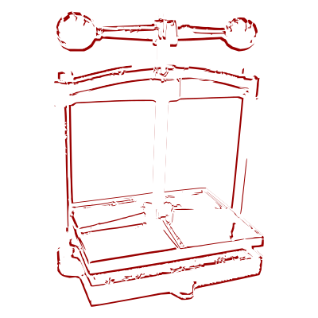

I am dedicated to preserve the timeless art of bookbinding, restoration and conservation while crafting custom books that reflect the unique stories of my clients. I believe that every book is a treasure, deserving of meticulous care and attention. My goal is to blend traditional craftsmanship with modern techniques to create lasting works of art that honor the written word.
Whether restoring a beloved family heirloom, bible, sacred text or designing a unique book for a special occasion, I focus on using high-quality conservation materials and traditional techniques to ensure that each piece is not only beautiful but also durable and reversible where needed. My goal is to create lasting works of art that celebrate the written word and preserve the memories they hold.